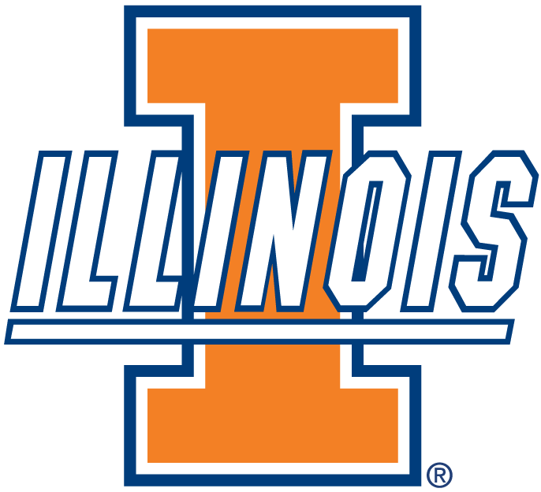
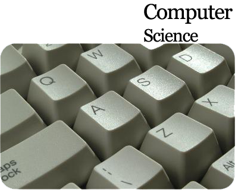

About Me
Index | About Me | Resume | Contact MeI'm a student, athlete, and gamer.
- I'm currently a Freshman at University of Illinois Urbana-Champaign, majoring in Computer Science.

- I've been interested in computer science for a few years now, with my first experience coding being in AP CS class my junior year of high school.

- I played club hockey for my high school all four years I was there, and plan to continue to play at Illinois.

- My family consists of me, my mom and dad, my one brother, and my cat.
- I've been a pretty avid PC gamer for a few years now, with a couple of my favorite games being the Fallout series and Team Fortress 2. I'll also play various indie games.

by Alex Blacketor.